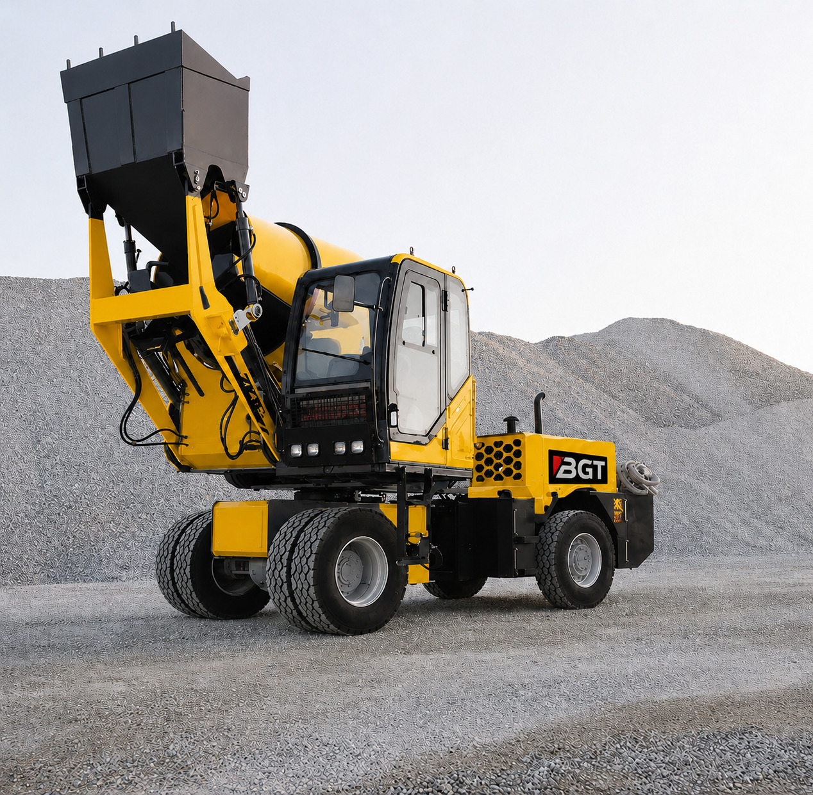
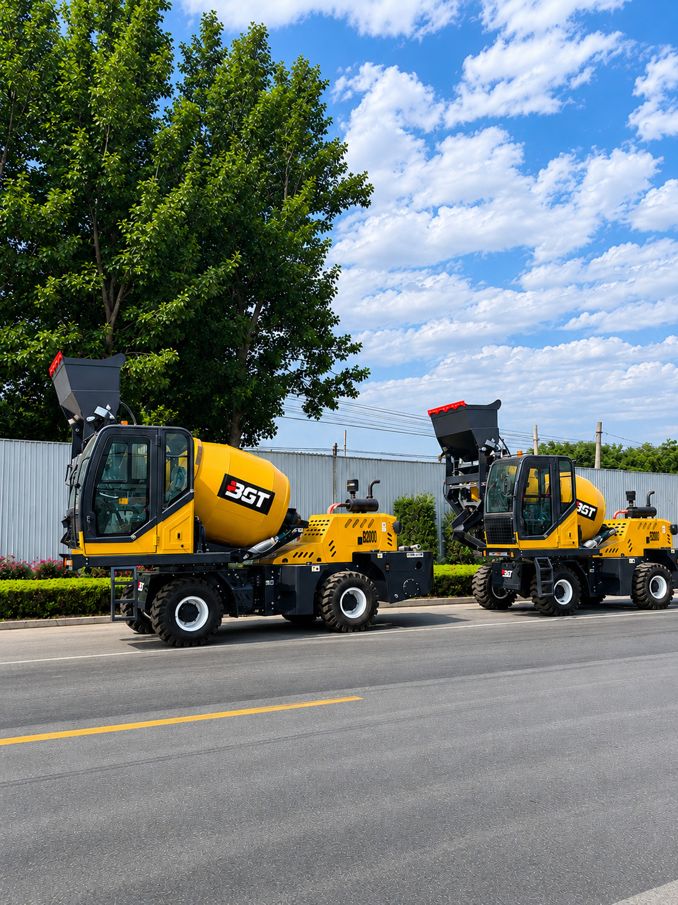

Across Africa, construction companies are under increasing pressure to deliver projects faster, control costs and maintain consistent concrete quality, often while working in locations where access to ready-mix concrete is limited. This is driving demand for equipment that can perform efficiently under challenging site conditions.
One machine that is changing how concrete is produced and delivered is the self-loading mobile concrete mixer.
By combining material loading, batching, mixing, transportation and discharge in a single mobile unit, self-loading mixers allow contractors to produce fresh concrete directly at the construction site. This makes them especially valuable for housing developments, road projects, drainage works, commercial buildings and infrastructure projects across Africa.
What Is a Self-Loading Mobile Concrete Mixer?
A self-loading mobile concrete mixer is a compact, multifunctional machine designed to produce and transport concrete independently.
Unlike a conventional concrete mixer, which depends on separate equipment and labour to load aggregates, measure materials and move the concrete, a self-loading mixer performs several operations with one machine.
Using its hydraulic loading bucket, the mixer collects sand, aggregates and other materials. Water and cement are added according to the required mix design, while the rotating drum mixes the materials into fresh concrete. The machine can then travel around the project site and discharge the concrete exactly where it is needed.
In practical terms, it functions as a mobile batching plant, wheel loader and concrete transit mixer combined into one efficient unit.

Why the Technology Is Well Suited to Africa
Construction conditions across Africa differ considerably from those in highly industrialised markets. Many projects are undertaken in developing urban areas, rural communities and locations where ready-mix plants may be unavailable or located far from the project site.
Self-loading mobile concrete mixers address several of these challenges.
1. On-Site Concrete Production
One of the most important benefits is the ability to produce concrete directly at the point of use.
Contractors no longer need to depend entirely on concrete delivered from a distant batching plant. This reduces waiting time, transportation challenges and the risk of concrete beginning to set before it reaches the site.
On-site production is particularly valuable for projects in rural areas, new housing estates, agricultural communities and developing industrial zones.
2. Reduced Dependence on Multiple Machines
Traditional site mixing may require a wheel loader, stationary mixer, weighing equipment, concrete transporter and a larger team of workers.
A self-loading mixer brings many of these functions together in one machine. This reduces equipment requirements, simplifies site coordination and allows contractors to deploy their resources more efficiently.
For small and medium-sized construction companies, this multifunctionality can make mechanised concrete production more accessible.
3. Lower Labour Requirements
Manual concrete production can be labour-intensive. Workers may be required to load aggregates, carry cement, measure materials, operate the mixer and transport the finished concrete.
With a self-loading mixer, most of these processes are handled mechanically by the equipment and its operator. A smaller team can therefore produce and place larger volumes of concrete with less physical effort.
This does not eliminate the need for skilled workers. Instead, it allows the workforce to focus on formwork, reinforcement, finishing, quality control and other activities that directly affect project delivery.
4. Faster Project Execution
Construction delays often result from slow material handling, unreliable concrete supply and poor coordination between different machines.
A self-loading mixer creates a more continuous production cycle:
Load → Batch → Mix → Transport → Discharge
Once one batch is discharged, the machine can immediately begin preparing the next. This can improve productivity on projects involving repetitive concrete work, such as foundations, slabs, columns, drainage channels, kerbs and road structures.
Faster concrete production can help contractors complete project stages earlier and improve the utilisation of labour and other site equipment.
5. Better Control of Concrete Quality
Manual mixing can produce inconsistent results when materials are measured by estimation rather than according to a defined mix design. Variations in cement, aggregates or water can affect concrete strength, durability and workability.
Modern self-loading mixers are equipped with electronic weighing and water-measuring systems that help the operator maintain more consistent batching.
When properly operated, this provides better control over:
- Cement-to-aggregate proportions
- Water content
- Mixing time
- Batch consistency
- Concrete workability
Consistent batching is particularly important for structural elements and projects where repeatable concrete quality is required.
6. Greater Mobility on Construction Sites
Self-loading mixers are designed to travel across active construction sites, including areas where larger concrete trucks may find access difficult.
Their manoeuvrability allows concrete to be produced close to the material storage point and delivered to different work areas. This can reduce the need for manual carrying, wheelbarrows or additional transport equipment.
Depending on the model and site conditions, the equipment can support construction activities across housing estates, road corridors, industrial compounds and dispersed infrastructure projects.
7. Less Concrete Waste
When contractors order ready-mix concrete, it can be difficult to estimate the exact quantity required for smaller or irregular work sections. Ordering too much creates waste, while ordering too little can interrupt the pour.
A self-loading mixer allows concrete to be produced in controlled batches according to immediate site requirements. Contractors can adjust production as the work progresses, reducing unnecessary surplus and improving material utilisation.
The ability to produce fresh concrete when required can also reduce losses associated with transport delays or concrete becoming unsuitable before placement.
8. Valuable for Equipment-Rental Businesses
The growing demand for flexible construction equipment creates an opportunity for equipment-rental companies.
A self-loading mixer can serve different customers and project types, including:
- Small and medium-sized contractors
- Real estate developers
- Road and drainage contractors
- Government infrastructure projects
- Industrial and agricultural developments
- Concrete product manufacturers
Because the machine performs several functions, rental operators can offer customers a practical concrete-production solution without requiring them to acquire a complete batching system.
Where Self-Loading Mixers Can Be Used
Self-loading mobile concrete mixers are suitable for a wide range of construction applications.
Housing Developments
They can produce concrete for foundations, floor slabs, columns, beams, fencing and external works. Their mobility is particularly useful on expanding housing estates where construction activities occur in different sections.
Road and Drainage Construction
Road contractors can use them for culverts, kerbs, gutters, drains, retaining structures and small bridges. The machine can move along the work corridor as construction progresses.
Commercial and Industrial Projects
Warehouses, workshops, factories, schools, hospitals and commercial developments often require concrete at different points across the site. A mobile mixer can support these distributed requirements.
Rural and Remote Infrastructure
Projects in locations without nearby batching plants can benefit considerably from independent on-site concrete production. These may include community roads, water projects, agricultural facilities and public infrastructure.
Precast and Concrete Products
The equipment can also support the production of blocks, paving stones, kerbs and other concrete products where controlled batches are required.

Choosing the Right Self-Loading Mixer
The most suitable model depends on the project type, required daily output, site layout and operating conditions.
Before selecting a machine, buyers should consider:
- Drum and batch capacity
- Expected daily concrete requirement
- Electronic weighing capability
- Water-measuring system
- Engine performance and fuel efficiency
- Terrain and ground conditions
- Availability of spare parts
- Operator training requirements
- Warranty and technical support
The biggest machine is not automatically the best choice. A properly sized mixer that matches the contractor’s normal workload will often provide better utilisation and a more practical return on investment.
The Importance of Training and After-Sales Support
Good equipment alone does not guarantee good results. Operators must understand loading procedures, batching controls, drum operation, safe movement, discharge methods and routine maintenance.
Preventive maintenance is equally important. Hydraulic systems, tyres, filters, lubrication points, weighing components and the mixing drum should be inspected according to the manufacturer’s recommended schedule.
For African buyers, choosing an equipment provider with dependable spare-parts availability, operator training and responsive technical support is essential. These services help reduce downtime and protect the long-term value of the machine.
A Smarter Approach to Concrete Production
The self-loading mobile concrete mixer is transforming African construction because it responds directly to the realities of the market: dispersed project locations, limited access to ready-mix concrete, pressure on labour productivity and the need to control project costs.
By integrating loading, batching, mixing, transportation and discharge, the machine gives contractors greater control over when, where and how their concrete is produced.
For growing construction companies, developers and equipment-rental businesses, it represents more than a replacement for a conventional mixer. It is a flexible concrete-production system capable of supporting faster, more organised and more efficient project delivery.